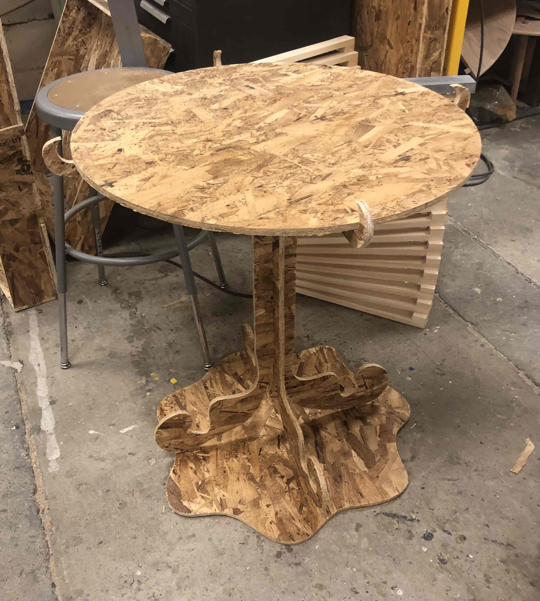

Phone
+1 857 209 6440
Email
rebei@mit.edu
No-glue Nightstand and Designing for Stability
Computer-Automated Machining to Make Something Big

Design Process
Summary
I didn't have a nightstand in my room so I wanted to make one to put in my room! I first designed the table in fusion and before making it with nice wood, I decided to first make a prototype using OSB (a very cheap type of wood) to make sure the table was stable and was able to be assembled.
What I Used:
- OSB Wood for Table Prototype
- Fusion 360 to design table
- Master CAM for Automated Tool Paths
- MIT Architecture Wood Shop
Final Product
I machined all the pieces using OSB. Oriented strand board (OSB) is a type of engineered wood similar to particle board, formed by adding adhesives and then compressing layers of wood strands (flakes) in specific orientations. Because of this, I didn't want my final nighstand in my room to be made from it. After machining the pieces, I also found that OSB smells pretty bad too. Therefore, this is my first attempt at making my nightstand to make sure all the pieces actually fit together and the table was able to hold itself upright. My second attempt, I would like to use nicer wood and paint it white. I would also like the top of the table to be made of a clear material, whether it be glass or plastic.
Making the Parts in Fusion 360
I have been using Fusion 360 this semester so I continued to use it for this assignment aswell. When designing the table, I wanted to have a vintage, elegant feel but still a little bit unique. That is why I decided not to make the legs perfect spirals and instead give them a little more personality. In terms of the base of the table, I wanted to be a flowy design, slightly inspired by Gaudi's flowy Neo-Gothic and organic styles. I designed the legs to just slide in together with a press fit and both of those legs will be places on the base with a press fit aswell. I thought this would be easier to make then to design four different legs. The top of the table will just rest directly on the legs and will be held in together with the hooks at the top of each leg piece.
Manufacturing the Parts
When manufacturing the parts, I wasn't able to get all of the dxf sketches in one sketch using Fusion 360 so Anthony helped me get all my dxf files in one file using SolidWorks and then Mastercam to get the document ready to machine.
This was the first time I have ever used a machine that cuts things to this magnitude so it was a really fun experience!
Once the machine cut all my pieces in the OSB, we went with a knife to make sure all of the pieces were cut all the way through for all of the traces and therefore can be easily removed.
Once all of the pieces were cut, then began alot of sanding. I wanted to make sure any parge pieces of OSB and rough edges were gone before I started assemblying all of the pieces of the table together.
Assembly of Parts
The last part was to assemble all of the parts to make the table. I didn't need to use any glue and everything was put together through press fits. The top of the table was just placed laying on top of the legs as so. I was surprised that the legs were able to hold up because the top of the table ended up being extremly heavy but it held through very well.
Similar Projects
Click below to explore more of my projects!